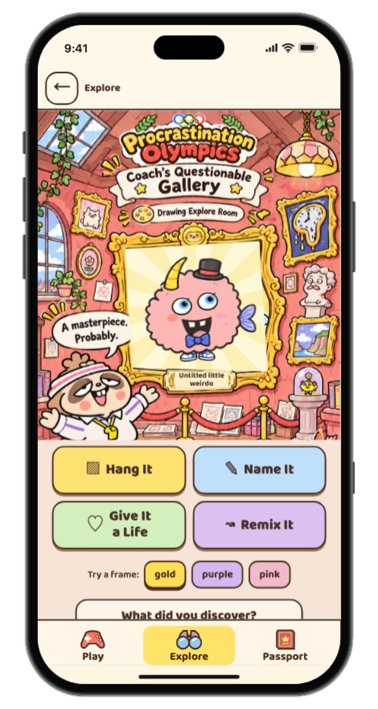
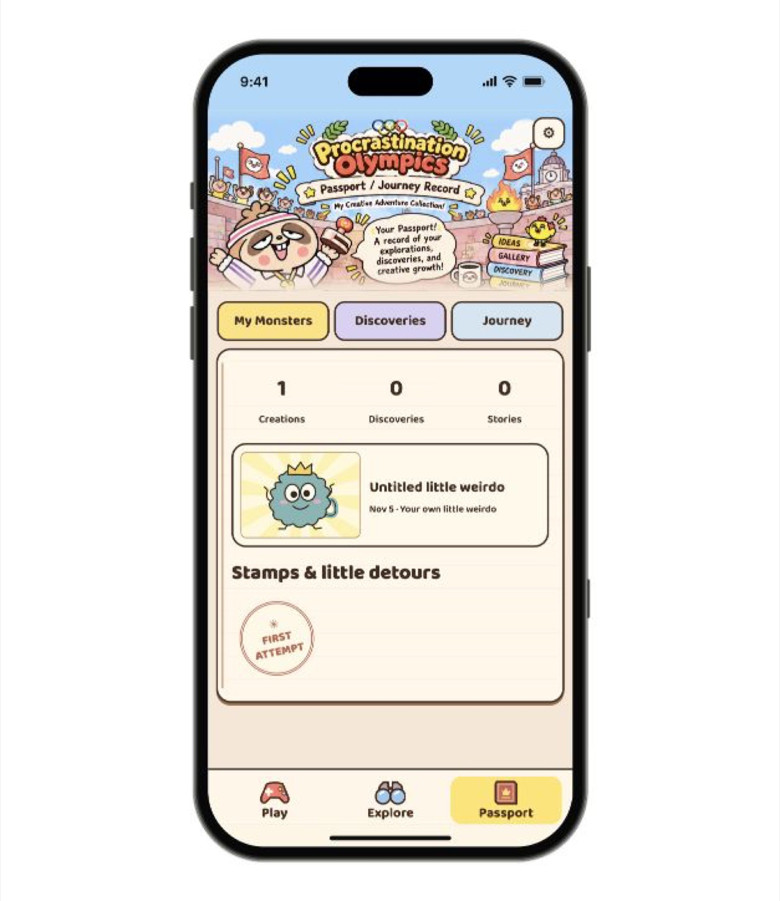

Procrastination Olympics
A playful mobile experience that helps hesitant makers start with one small creative act and build on it later.
Try the mobile prototype
The first move
Coach Sloth gives players a concrete task: assemble a monster by choosing its features, colors, and accessories. A timed round gives it momentum, and an untimed option lets players set their own pace.
One creation, several paths
The same monster can become a gallery exhibit, a character with a backstory, or the start of a writing exercise. The Passport preserves creations and unfinished drafts for a return visit.
What the prototype tests
Can someone find a first activity, make something, and choose a next step on their own? The browser prototype saves work locally. Participant testing for this question is still planned.
Project documentation

